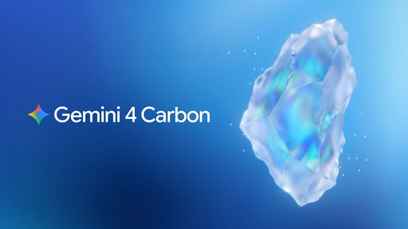
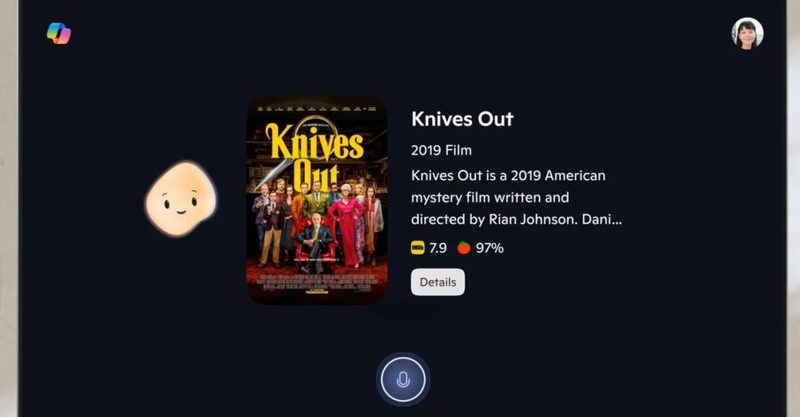

📋 今天 7 則 Google 發表 Gemini 4 Carbon，主打找漏洞、修漏洞 微軟要把 Copilot 從所有智慧電視上撤掉 Anthropic 研究：專家 86% 的判斷跟著 AI 代理走 Google AI 模式廣告擴大到 10 個國家 荷蘭政府計畫裁減 2.5 萬個公務員職位，改用更多 AI 傳 OpenAI 要買 Google 的 AI 晶片 川普說要禁用「AI」一詞，改叫「超級智慧」 
圖：Google 新聞 #1 Google 發表 Gemini 4 Carbon，主打找漏洞、修漏洞 Google 10 月 28 日發表新一代模型 Gemini 4 Carbon，距離上一款 Gemini 4 Argon 只隔兩週。官方表示它在 Artificial Analysis 綜合指標 v5.0 拿下第一（59 分），在找漏洞的 SEC-bench Pro 達 88.2%、修補漏洞的 CWE-bench 達 71.0%，也能連續跑好幾天處理複雜的程式工作。
💡 跟你有什麼關係： AI 找漏洞的能力變強，代表軟體公司能更快修好你手機、瀏覽器裡的安全問題；但同樣的能力也可能被拿去攻擊，所以 Google 這次刻意分階段開放。
⚠️ 目前只先給一小群資安防禦業者透過 Fairwind 計畫使用，一般開發者和消費者要等之後開放；成績多為 Google 自行公布。
📰 原始來源：Google 官方部落格（2026-10-28） ↗ 
圖：Microsoft（經 The Verge） 新聞 #2 微軟要把 Copilot 從所有智慧電視上撤掉 Windows Central 編輯 10 月 28 日在自家 LG 電視上看到通知：微軟決定終止所有電視上的 Copilot 功能，預計 2026 年內停止，確切日期依微軟時程而定。LG 和 Samsung 在 CES 2025 宣布電視內建 Copilot，才過了將近兩年。
💡 跟你有什麼關係： 如果你家 LG 或 Samsung 電視有 Copilot 按鈕，之後可能就不能用了；去年 LG 曾因塞進刪不掉的 Copilot 捷徑引發用戶反彈。這也顯示微軟正把 Copilot 轉向工作與企業用途。
⚠️ 消息來自電視上的通知，微軟、LG、Samsung 都還沒發正式公告。
📰 原始來源：The Verge（2026-10-28） ↗ 圖：Anthropic 研究 #3 Anthropic 研究：專家 86% 的判斷跟著 AI 代理走 Anthropic 10 月 27 日公布實驗：50 位因果分析專家用 Claude Code 做一份資料分析，研究者暗中用擲硬幣決定 AI 偏好哪個選項。結果專家在四個分析選擇上有 86% 跟 AI 的偏好一致；事後 77% 的人用了 AI 的說法來解釋自己的選擇，但只有 15% 提到是 AI 的意見。
💡 跟你有什麼關係： 不只工程師，任何人請 AI 幫忙寫報告、做比較時，都可能以為是自己拿主意，其實是被 AI 帶著走。重要決定最好先有自己的看法，再請 AI 把每個選項的理由都講清楚。
⚠️ 官方說明實驗刻意加強了 AI 的偏好，只測一種任務、一個模型，真實情況的影響可能較小；有用 AI 的人嚴重錯誤也比較少。
📰 原始來源：Anthropic（2026-10-27） ↗ 圖：Google 資金 #4 Google AI 模式廣告擴大到 10 個國家 Google 10 月 28 日宣布，搜尋的 AI 模式（AI Mode）廣告開始在澳洲、加拿大、印度、馬來西亞、紐西蘭、菲律賓、新加坡等 10 國擴大投放，第四季再加入巴西、墨西哥和英國。美國則開始在 AI 模式的追問對話中也放廣告。
💡 跟你有什麼關係： 以後在 AI 搜尋裡問「哪台吸塵器好」，答案旁邊可能會出現付費推薦；Google 說廣告會標示「Sponsored（贊助）」，看到時要分清楚哪些是廣告。
⚠️ 這次名單沒有台灣；Google 稱 AI 模式中贊助與一般商品清單的點擊率相近，屬官方數據。
📰 原始來源：Google 官方部落格（2026-10-28） ↗ 圖：Pourya Gohari／Unsplash（經 TNW） 政策 #5 荷蘭政府計畫裁減 2.5 萬個公務員職位，改用更多 AI 荷蘭內閣本週一宣布，將在未來幾年分階段裁減約 2.5 萬個中央政府全職職位，2027 年省下 9 億歐元，2035 年起每年省 35 億歐元。警察和國防不在裁減範圍，具體使用 AI 的目標和計畫將在 2027 年第一季提出。
💡 跟你有什麼關係： 這是政府直接把「用 AI 提高效率」寫成人力縮減數字的例子，未來其他國家的公部門、甚至民眾洽公的方式，都可能跟著改變。
⚠️ 裁員細節要等明年春季預算更新才公布，AI 實際能取代多少工作尚未說明。
📰 原始來源：TNW（2026-10-28） ↗ 圖：Reuters／Dado Ruvic（示意圖） 資金 #6 傳 OpenAI 要買 Google 的 AI 晶片 路透 10 月 27 日引述 The Information 報導，OpenAI 計畫購買 Google 的 TPU AI 晶片，金額與數量未公開。OpenAI 是 Nvidia GPU 的大買家，2025 年起已向 Google 租用 TPU；Google 今年開始直接賣 TPU 給部分客戶。
💡 跟你有什麼關係： AI 晶片供應不再只靠 Nvidia，有機會讓算力成本下降，長期可能反映在 AI 服務的價格和速度上。
⚠️ 屬媒體引述消息來源，OpenAI 不予置評，Google 尚未回應。
📰 原始來源：Reuters（經 CNA，2026-10-27） ↗ 圖：Reuters／Jonathan Ernst 政策 #7 川普說要禁用「AI」一詞，改叫「超級智慧」 美國總統川普 10 月 27 日在 Truth Social 發文，批評《華爾街日報》還在用「人工智慧（AI）」這個「不準確」的名稱，表示很快會在所有相關文件中「正式禁用」AI 一詞，改稱 SI（Super Intelligence，超級智慧）。
💡 跟你有什麼關係： 名稱本身不會改變技術，但若美國政府文件真的改用新詞，查政府公告、法規時可能會遇到「SI」這種新說法。
⚠️ 目前只有社群貼文，路透報導未提到具體執行文件，適用範圍不明。
📰 原始來源：Reuters（經 Yahoo News，2026-10-27） ↗ ✅ 今天可以做： 下次請 AI 幫你做判斷題（例如選方案、選指標）時，先寫下自己的想法，再請它分別替每個選項說出最強的理由，比較不容易被單方面說服。
🗂️ 過去 14 天